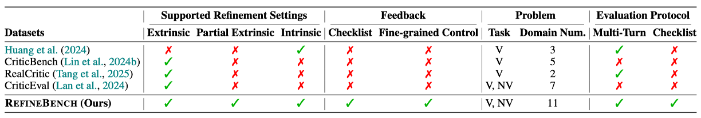

(Left) Strong LMs such as Claude-4-Sonnet can self-refine effectively on AIME-24, where they already solve problems reasonably well in the first iteration. However, on saturated benchmarks such as MATH-500, there is little headroom for improvement, and on our proposed benchmark, RefineBench, performance gains remain limited. Hence, RefineBench serves as a testbed for measuring self-refinement capability of frontier LMs. (Right) The biggest bottleneck when an LM refines its output is that it often struggles to identify which aspects need to be corrected. In RefineBench, beyond the self-refinement setting where the LM must independently identify and fix errors, we also introduce settings where partial hints are provided about what needs to be revised, or where the amount of feedback varies. This enables a systematic analysis of refinement capability.
Includes both free-form generation and answer-based correctness tasks, ensuring diverse refinement evaluation.
Supports both guided and self-refinement settings, enabling controlled analysis of refinement strategies.
Covers 11 domains, from math, statistics, and STEM to humanities, law, and social sciences.
Each task is assessed via a detailed checklist defining explicit and transparent evaluation criteria.
Measures performance improvement across multiple turns and evaluates refinement under both self- and guided-refinement settings.
RefineBench evaluates an LM’s ability to iteratively refine its own answers through a structured three-step workflow:
RefineBench includes 1,002 problems spanning 11 domains and 143 subjects, each paired with a checklist averaging 9.9 binary criteria. Major domains include Math (32%), Humanities/Social Science (19%), and Law (14%), ensuring balanced coverage of verifiable and non-verifiable reasoning tasks.
Compared to existing datasets, RefineBench uniquely supports:
Select a field and index to view the data.
@article{refinebench2024,
title = {RefineBench: A Benchmark for Refinement Capabilities of Language Models},
author = {RefineBench Team},
journal = {arXiv preprint arXiv:2400.00000},
year = {2024}
}